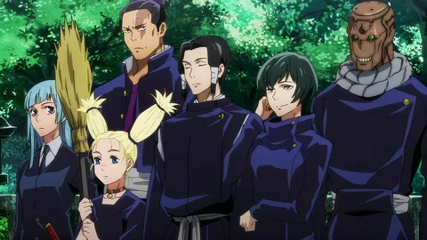
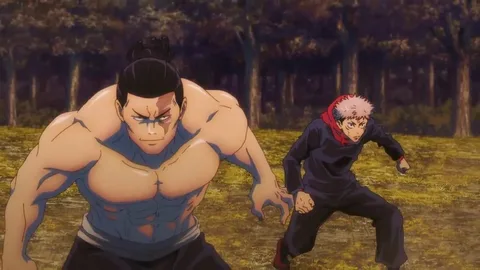
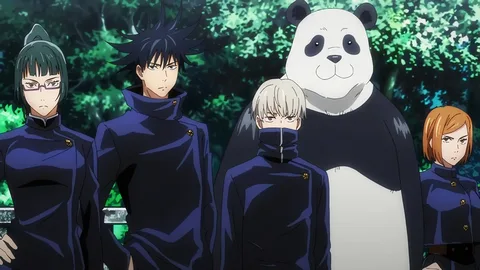
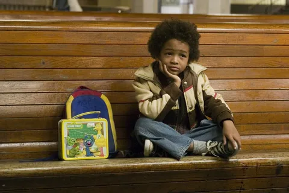
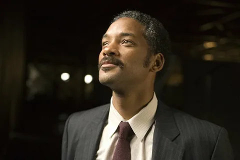
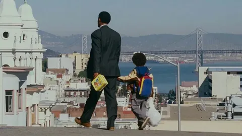
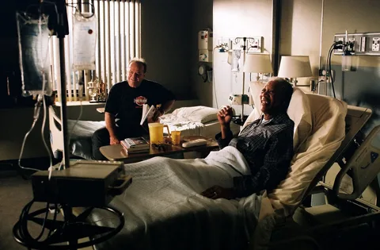
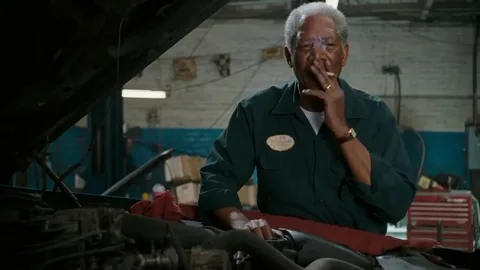

  
| Год | 2018 |
|---|---|
| Страна | Япония |
| Жанр | Приключения, мистика |
| Режисёр | Пак Сонху, Сёта Госодзоно |
  
| Год | 2006 |
|---|---|
| Страна | США |
| Жанр | Драмма |
| Режисёр | Габриеле Муччино |
 
| Год | 2007 |
|---|---|
| Страна | США |
| Жанры | Бадди-муви, комедийный фильм, драматический фильм и трагикомедия |
| Режисёр | Роб Райнер |